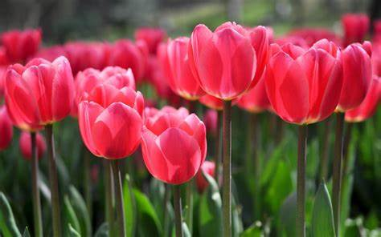
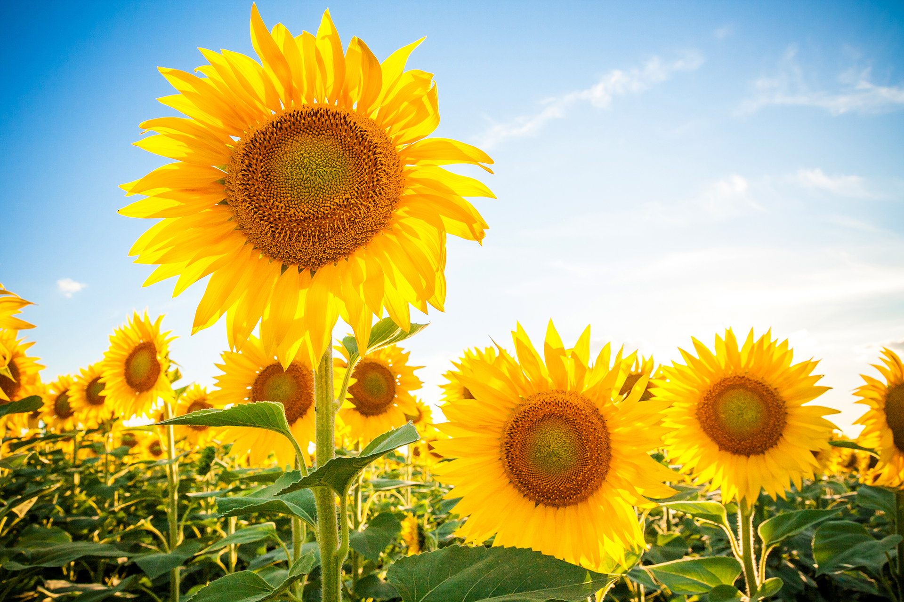
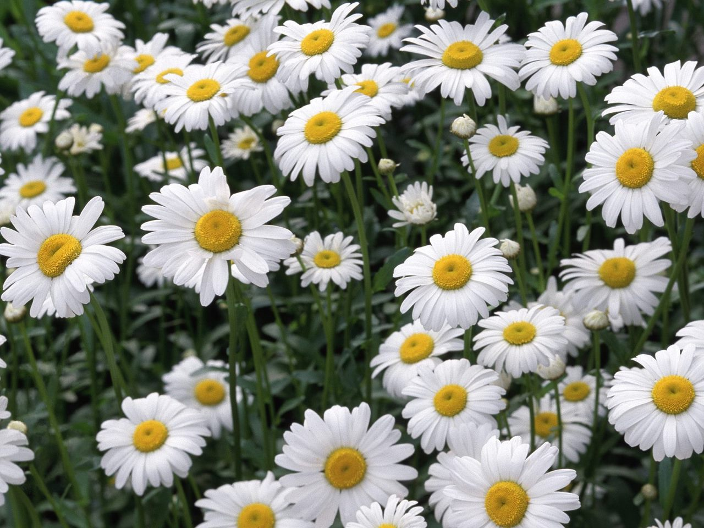
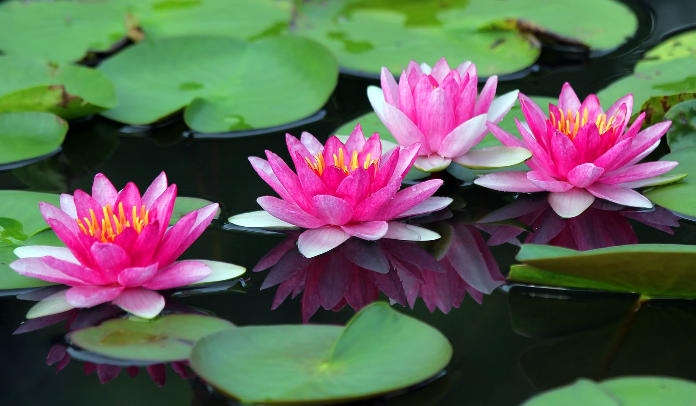

Flowers, with their dazzling diversity, enrich our world through an array of shapes, colors, and scents. From the elegant orchids, known for their intricate patterns and exotic allure, to the cheerful sunflowers that radiate warmth and positivity, each type of flower offers its own unique beauty and symbolism. Delicate roses convey romance and deep emotions, while vibrant tulips often symbolize rebirth and new beginnings. The versatile lilies, with their graceful form and varied hues, can represent purity or wealth depending on their color. Daisies, with their simple yet charming appearance, evoke innocence and cheerfulness. This wide range of flower types not only adds aesthetic pleasure to gardens and floral arrangements but also enriches cultural traditions and personal sentiments, making flowers a universal language of nature's artistry.